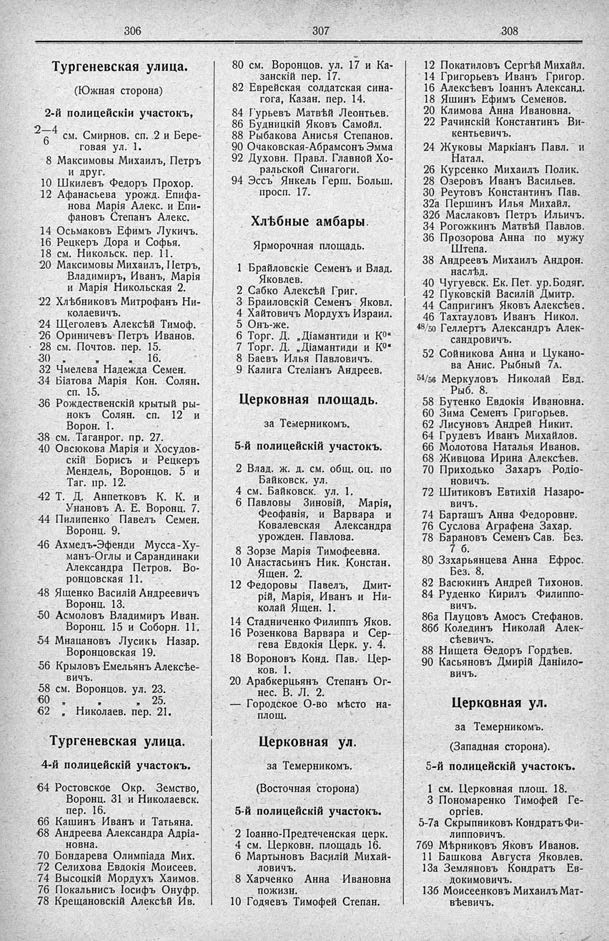

Лист источника 234
Скан

Распознанный текст
306
Тургеневская улица.
(Южная сторона)
2-й полицейскій участокъ,
2—4 см. Смирнов. сп. 2 и Бере-
6 говая ул. 1.
8 Максимовы Михаилъ, Петръ
и друг.
10 Шкилевъ Федоръ Прохор.
12 Афанасьева урожд. Епифа-
нова Марія Алекс. и Епи-
фановъ Степанъ Алекс.
14 Осьмаковъ Ефимъ Лукичъ.
16 Рецкеръ Дора и Софья.
18 см. Никольск. пер. 11.
20 Максимовы Михаилъ, Петръ,
Владимиръ, Иванъ, Марія
и Марія Никольская 2.
22 Хлѣбниковъ Митрофанъ Ни-
колаевичъ.
24 Щеголевъ Алексѣй Тимоф.
26 Ориничевъ Петръ Иванов.
28 см. Почтов. пер. 15.
30 „ „ „ 16.
32 Чмелева Надежда Семен.
34 Бѣатова Марія Кон. Солян.
сп. 15.
36 Рождественскій крытый ры-
нокъ Солян. сп. 12 и
Ворон. 1.
38 см. Таганрог. пр. 27.
40 Овсюкова Марія и Хосудов-
скій Борисъ и Рецкеръ
Мендель, Воронцов. 5 и
Таг. пр. 12.
42 Т. Д. Аппетковъ К. К. и
Унановъ А. Е. Воронц. 7.
44 Пилипенко Павелъ Семен.
Воронц. 9.
46 Ахмедъ-Эфенди Мусса-Ху-
манъ-Оглы и Сарандинаки
Александра Петров. Во-
ронцовская 11.
48 Ященко Василій Андреевичъ
Воронц. 13.
50 Асмоловъ Владимиръ Иван.
Воронц. 15 и Соборн. 11.
54 Мнацановъ Лусикъ Назар.
Воронцовская 19.
56 Крыловъ Емельянъ Алексѣе-
вичъ.
58 см. Воронцов. ул. 23.
60 „ „ „ 25.
62 „ Николаев. пер. 21.
Тургеневская улица.
4-й полицейскій участокъ.
64 Ростовское Окр. Земство,
Воронц. 31 и Николаевск.
пер. 16.
66 Кашинъ Иванъ и Татьяна.
68 Андреева Александра Адріа-
новна.
70 Бондарева Олимпіада Мих.
72 Селихова Евдокія Моисеев.
74 Высоцкій Мордухъ Хаимов.
76 Покальнисъ Іосифъ Онуфр.
78 Крещановскій Алексѣй Ив.
307
80 см. Воронцов. ул. 17 и Ка-
занскій пер. 17.
82 Еврейская солдатская сина-
гога, Казан. пер. 14.
84 Гурьевъ Матвѣй Леонтьев.
86 Будницкій Яковъ Самойл.
88 Рыбакова Анисья Степанов.
90 Очаковская-Абрамсонъ Эмма
92 Духовн. Правл. Главной Хо-
ральской Синагоги.
94 Эссъ Янкель Герш. Больш.
просп. 17.
Хлѣбные амбары.
Ярморочная площадь.
1 Брайловскіе Семенъ и Влад.
Яковлев.
2 Сабко Алексѣй Григ.
3 Браиловскій Семенъ Яковл.
4 Хайтовичъ Мордухъ Израил.
5 Онъ-же.
6 Торг. Д. „Діамантиди и К⁰“
7 Торг. Д. „Діамантиди и К⁰“
8 Баевъ Илья Павловичъ.
9 Калига Стеліанъ Андреев.
Церковная площадь.
за Темерникомъ.
5-й полицейскій участокъ.
2 Влад. ж. д. см. общ. оц. по
Байковск. ул.
4 см. Байковск. ул. 1.
6 Павловы Зиновій, Марія,
Ѳеофанія, и Варвара и
Ковалевская Александра
урожден. Павлова.
8 Зорзе Марія Тимофеевна.
10 Анастасьинъ Ник. Констан.
Ящен. 2.
12 Федоровы Павелъ, Дмит-
рій, Марія, Иванъ и Ни-
колай Ящен. 1.
14 Стадниченко Филиппъ Яков.
16 Розенкова Варвара и Сер-
гева Евдокія Церк. у. 4.
18 Вороновъ Конд. Пав. Цер-
ков. 1.
20 Арабкерцьянъ Степанъ Ог-
нес. В. Л. 2.
— Городское О-во мѣсто на-
площ.
Церковная ул.
за Темерникомъ.
(Восточная сторона)
5-й полицейскій участокъ.
2 Іоанно-Предтеченская церк.
4 см. Церковн. площадь 16.
6 Мартыновъ Василій Михай-
ловичъ.
8 Харченко Анна Ивановна
пожизн.
10 Годяевъ Тимофей Степан.
308
12 Покатиловъ Сергѣй Михайл.
14 Григорьевъ Иванъ Григор.
16 Алексѣевъ Іоаннъ Александ.
18 Яшинъ Ефимъ Семенов.
20 Климова Анна Ивановна.
22 Рачинскій Константинъ Ви-
кентьевичъ.
24 Жуковы Маркіанъ Павл. и
Натал.
26 Курсенко Михаилъ Полик.
28 Озеровъ Иванъ Васильев.
30 Реутовъ Константинъ Пав.
32а Першинъ Илья Михайл.
32б Маслаковъ Петръ Ильичъ.
34 Рогожкинъ Матвѣй Павлов.
36 Прозорова Анна по мужу
Штепа.
38 Андреевъ Михаилъ Андрон.
наслѣд.
40 Чугуевск. Ек. Пет. ур. Бодяг.
42 Пуковскій Василій Дмитр.
44 Сапригинъ Яковъ Алексѣев.
46 Тахтауловъ Иванъ Никол.
48/50 Геллертъ Александръ Алек-
сандровичъ.
52 Сойникова Анна и Цукано-
ва Анис. Рыбный 7А.
54/56 Меркуловъ Николай Евд.
Рыб. 8.
58 Бутенко Евдокія Ивановна.
60 Зима Семенъ Григорьев.
62 Лисуновъ Андрей Никит.
64 Грудевъ Иванъ Михайлов.
66 Молотова Наталья Иванов.
68 Живцова Ирина Алексѣев.
70 Приходько Захаръ Родіо-
новичъ.
72 Шитиковъ Евтихій Назаро-
вичъ.
74 Барташъ Анна Федоровнв.
76 Суслова Аграфена Захар.
78 Барановъ Семенъ Сав. Без.
7 б.
80 Ззхарьянцева Анна Ефрос.
Без. 8.
82 Васюкинъ Андрей Тихонов.
84 Руденко Кирилъ Филиппо-
вичъ.
86а Плуцовъ Амосъ Стефанов.
86б Колединъ Николай Алек-
сѣевичъ.
88 Нищета Ѳедоръ Гордѣев.
90 Касьяновъ Дмирій Даніило-
вичъ.
Церковная ул.
за Темерникомъ.
(Западная сторона).
5-й полицейскій участокъ.
1 см. Церковная площ. 18.
3 Пономаренко Тимофей Ге-
оргіев.
5-7а Скрыпниковъ Кондратъ Фи-
липповичъ.
7б9 Мѣрниковъ Яковъ Иванов.
11 Башкова Августа Яковлев.
13а Земляновъ Кондратъ Ев-
докимовичъ.
13б Моисеенковъ Михаилъ Мат-
вѣевичъ.